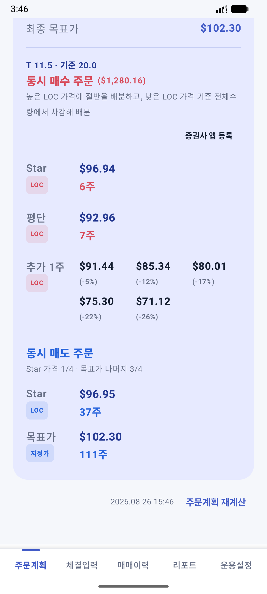
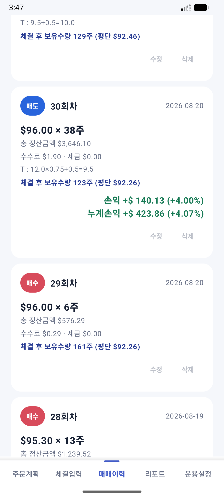
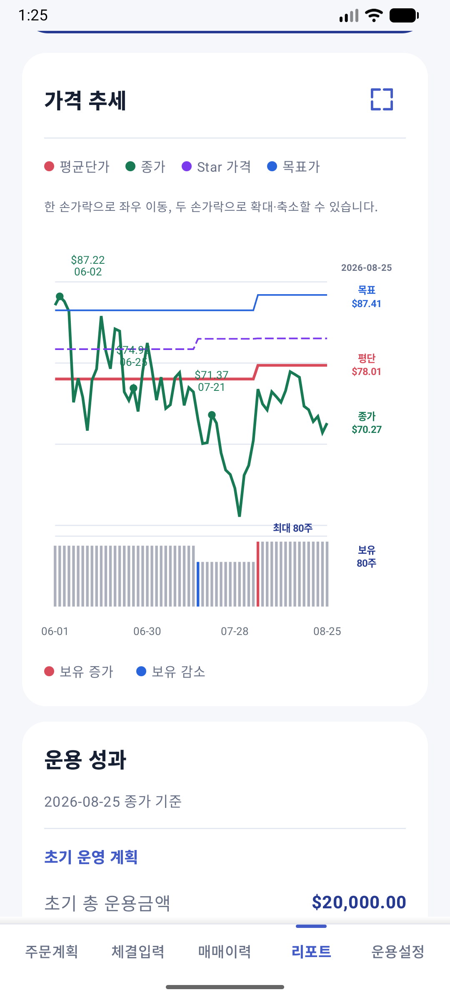
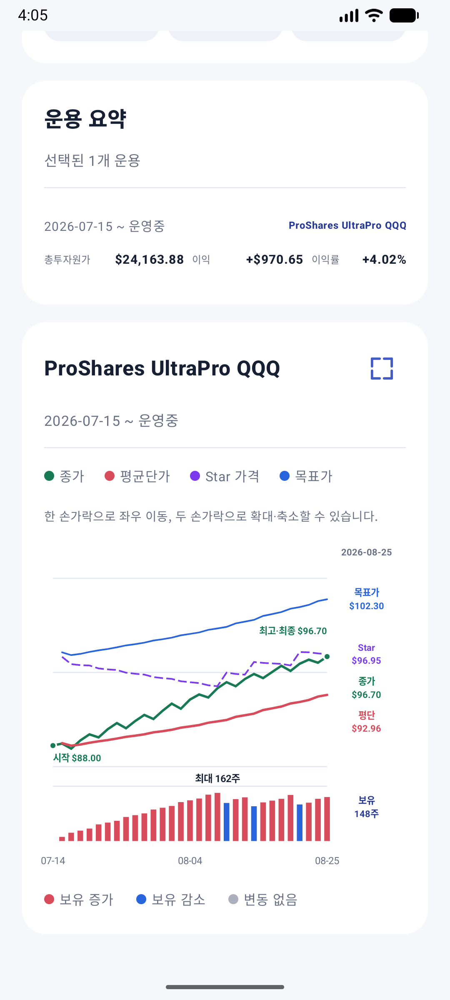
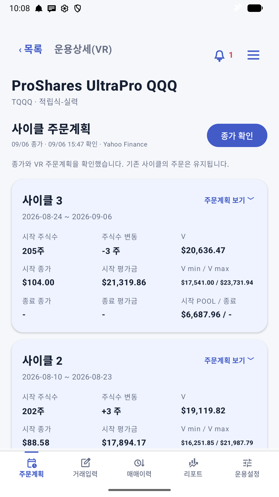
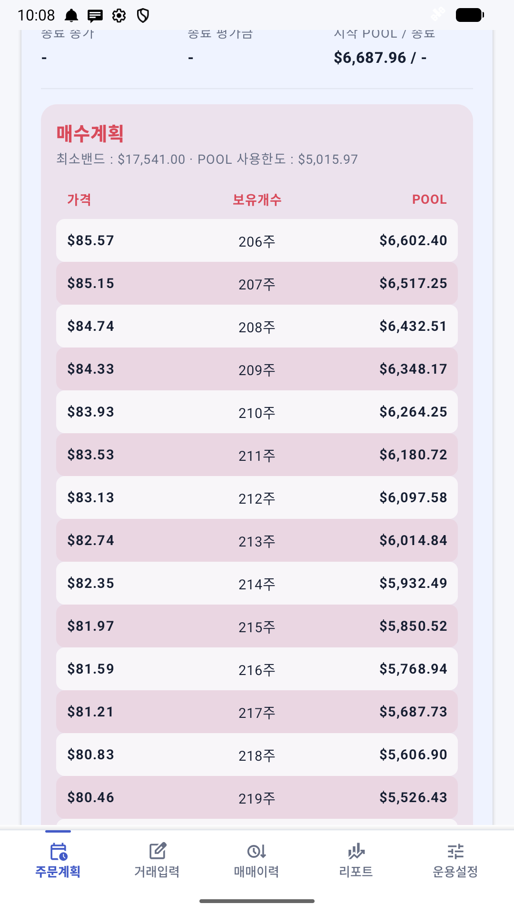
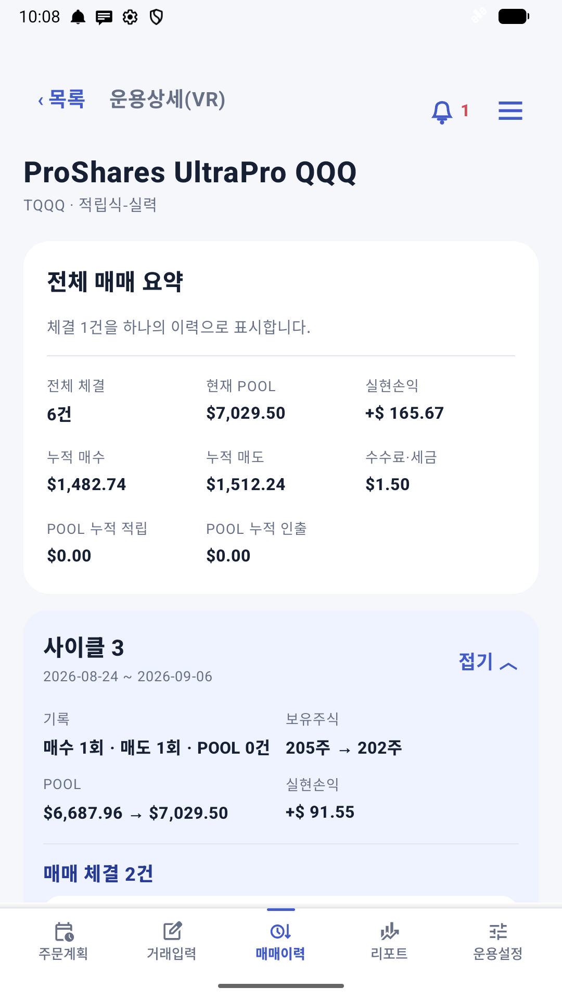
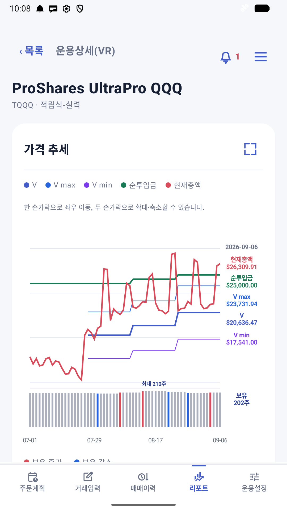
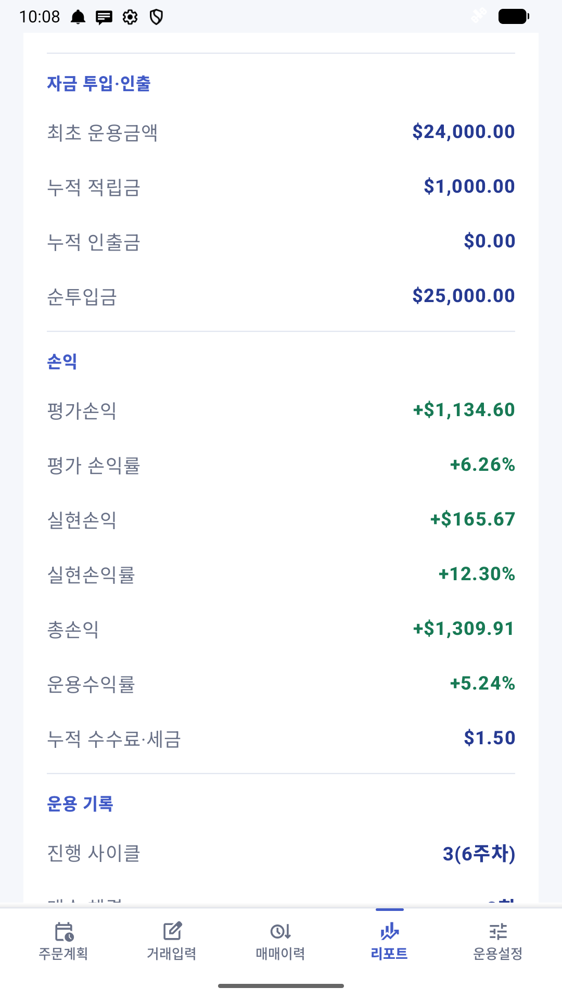
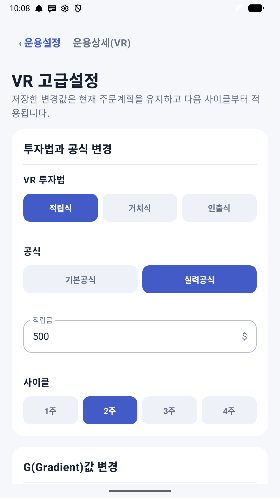

1 · 공통사항
두 모드에서 함께 사용하는 기능
처음에는 공통 설정을 확인한 뒤 운용모드를 선택하세요. 이후에는 선택한 모드의 안내를 따라 등록부터 주문계획, 체결과 결과 확인까지 진행합니다.
공통 시작 순서
- 시장·종목코드·종목명과 사용할 증권사 앱을 확인합니다.
- 아래 운용모드 소개를 읽고 운용 추가에서 모드를 선택합니다.
- 선택한 모드의 기준을 설정하고 종가와 주문계획을 확인합니다.
- 증권사에서 실제로 체결된 내용을 기록하고 수량·정산금액을 대조합니다.
- 주요 변경 전후에 운용자료를 백업합니다.
공통 용어와 체결 확인
- 투자원가
- 평균단가 × 현재 보유수량입니다.
- 총 정산금액
- 매수는 수수료·세금이 포함된 실제 출금액, 매도는 비용이 차감된 실제 입금액입니다. 입력한 정산금액은 잔고·평균단가·매도손익 계산에 우선 적용됩니다.
- 종가
- 저장된 시세의 날짜와 출처를 확인하세요. 체결가격과 종가는 서로 다를 수 있습니다.
체결문 분석 또는 알림 자동 가져오기를 사용해도 종목·매매구분·체결수량·총 정산금액을 실제 거래명세와 대조한 후 저장합니다. 부분체결 안내의 개별 체결수량과 누적 수수료·누적 결제금액을 구분하고, 누적 금액을 반복 합산하지 마세요.
통계 조회
조회조건은 운용모드 → 종목 순서로 선택합니다. 기간과 운용상태를 함께 확인하세요. 모드별 조회단위와 그래프 기준은 아래 각 모드의 리포트 안내에서 설명합니다.
‘기간과 겹침’은 선택한 기간과 실제 운용기간이 일부라도 겹치는 운용을 포함합니다. 금액은 한국·미국 통화를 구분해 확인합니다.
저장·시세·백업 기본사항
기기 중심 저장
운용자료는 원칙적으로 휴대전화의 앱 전용 저장소에서 처리됩니다.
외부 종가
한국은 Yahoo Finance, 미국은 Yahoo Finance 또는 Twelve Data를 선택할 수 있습니다.
수동 확인
종가와 계산 결과에 오류·지연이 있을 수 있으므로 실제 거래 전 증권사 자료와 대조합니다.
암호화 백업
휴대전화 저장소와 Google Drive 백업은 사용자가 정한 비밀번호로 암호화합니다.
공통 리포트 · 원화환산 손익
미국 주식의 무한매수법과 VR 리포트에서 원화환산 평가손익·실현손익·총손익·운용수익률을 확인합니다. 거래일별 환율 기록 보기에서 적용 날짜와 환율을 확인하고, 조회에 실패하면 환율 업데이트를 누릅니다.
매수일 환율로 원가를 기록하고 매도일·평가일 환율로 손익을 계산합니다. 부분 매도 원가는 원화 이동평균으로 배분합니다. 보유현금과 VR POOL의 환차손익은 제외합니다. 운용수익률은 총손익을 매도분 원가와 잔여 원가의 합계로 나눈 값입니다.
매수 이력이 없는 초기 보유주식은 운용 시작일 환율을 적용합니다. 일별 환율은 실제 증권사의 체결 순간 환율이나 환전 수수료와 다를 수 있습니다. 해당일 자료가 없으면 최대 7일 이내 직전 환율을 사용하고, 필요한 자료가 없으면 금액과 합계를 —로 표시합니다. 저장 환율은 암호화 백업에 포함됩니다.
환차손익 상세
원화환산 손익은 각 운용 리포트 안에서 확인합니다. 환차손익 상세와 적용 환율·계산 기준은 기본 접힘이며 펼쳐서 실현 환차손익, 보유주식 환차손익, 총 환차손익을 확인할 수 있습니다. 이 금액은 원화환산 손익에 이미 포함되어 있으므로 다시 더하지 않습니다. 보유현금·POOL 환차손익과 실제 환전 수수료는 제외합니다. 한국 종목에는 환율 관련 구역을 표시하지 않습니다.
통계와 VR 리포트 개선
통계의 표시 통화는 달러가 기본이며 원화로 전환할 수 있습니다. 운용 요약·VR 사이클 손익·그래프에 반영됩니다. 그래프 총액 선은 현금이 포함된 시장가치이므로 현금을 제외한 원화 손익과 구분해 확인합니다.
좁은 화면의 총투자원가·이익 표시를 개선하고 시작일·종료일을 '26-01-01 형식으로 줄였습니다. VR 리포트의 진행 사이클은 3(6주차)처럼 현재 번호와 주차를 표시하며, 평가 손익률·실현손익률을 함께 확인할 수 있습니다.
백업과 복원
위치 선택
Google Drive 또는 휴대전화 저장소를 선택합니다.
비밀번호 입력
8자 이상의 비밀번호를 지정합니다. 비밀번호는 앱에 저장되지 않습니다.
파일 확인
저장 날짜·시각이 포함된 암호화 백업 파일이 실제로 생성됐는지 확인합니다.
복원 검산
복원 후 카드 수, 체결 건수, 평단, 수량, 현금과 손익을 비교합니다.
- Google Drive는 처음 선택한 폴더의 접근 권한을 기억하여 이후 같은 폴더에 바로 저장할 수 있습니다.
- 새 백업은 AES-256-GCM으로 암호화하며 기존 일반 JSON 백업도 복원할 수 있습니다.
- 백업 비밀번호를 잃으면 복구할 수 없습니다. 비밀번호와 백업 파일을 서로 다른 안전한 위치에 보관하세요.
- Twelve Data API 키와 승인 대기 체결 알림은 백업에 포함되지 않습니다.
증권사 앱 연결
무한매수법과 VR 모두 기본 앱을 정하고, 필요한 카드에만 다른 앱을 지정할 수 있습니다.
- 사용할 증권사 앱을 휴대전화에 설치하고 직접 실행·로그인이 되는지 확인합니다.
- 전체메뉴 → 기본 증권사 앱 → 기본 증권사 앱 등록에서 설치된 앱을 선택합니다. 이미 등록했다면 ‘기본 증권사 앱 변경’으로 바꿉니다.
- 다른 증권사를 쓰는 카드는 해당 운용 → 운용설정 → 주문 증권사 → 이 운용만 다른 증권사 사용에서 지정합니다. ‘기본값 복귀’를 누르면 전체메뉴의 기본 앱을 사용합니다.
- 주문계획에서 연결한 앱이 올바르게 열리는지 확인하고, 증권사 앱 안에서 계좌·종목·매매구분·가격·수량·주문조건을 확인한 뒤 주문합니다.
앱 연결은 실행할 앱을 지정하는 기능입니다. 로그인·계좌 전환·주문 제출은 증권사 앱에서 직접 합니다. StarTrade에 계좌 끝자리를 저장해도 증권사 앱의 주문 계좌가 자동으로 바뀌지는 않습니다.
기본 앱을 변경하면 개별 앱을 지정하지 않은 카드에도 바뀐 기본값이 적용됩니다. 각 카드의 ‘주문 증권사’와 ‘체결 알림 자동 연결’에 표시된 증권사를 함께 확인하세요. 앱을 열지 못하면 설치 상태를 확인하고 다시 선택합니다.
동일 증권사에서 여러 계좌를 운용할 때
같은 종목이라도 계좌가 다르면 운용카드를 따로 만들고, 별칭은 ‘TQQQ 계좌55’, ‘TQQQ 계좌88’처럼 구분합니다. 별칭만으로 알림 계좌를 구분하지는 않으므로 계좌 끝자리도 저장합니다.
- 각 카드의 운용설정 → 주문 증권사에서 실제 증권사 앱을 확인합니다. 같은 앱을 여러 카드에 연결해도 됩니다.
- 같은 구역의 ‘계좌 끝 2자리 (선택)’에 계좌번호의 마지막 숫자 두 자리(예: 05, 55, 88)를 입력하고 ‘계좌 끝자리 저장’을 누릅니다. 각 카드마다 저장합니다.
- 각 카드의 거래입력 → 체결 알림 자동 연결을 켭니다. 전체메뉴의 자동 가져오기와 Android 알림 권한도 함께 확인합니다.
- 새 체결 알림이 도착하면 종 아이콘의 승인 대기함에서 종목·증권사·계좌 **끝자리·연결된 카드를 실제 내역과 대조하고 승인합니다.
자동 연결 순서와 예외
자동 연결이 켜진 진행 중 운용에서 종목으로 후보를 찾습니다. 후보가 하나면 증권사·계좌 설정과 관계없이 연결될 수 있습니다. 여러 후보가 있으면 증권사로 좁히고, 같은 증권사 후보도 여러 개일 때 계좌 끝 두 자리를 비교합니다. 계좌 끝자리 설정은 모든 알림의 계좌 일치를 강제하는 잠금장치가 아닙니다.
- 끝 두 자리가 같거나, 알림에 계좌 끝자리가 없거나, 증권사·계좌를 읽지 못해 후보를 하나로 정할 수 없으면 승인 화면에서 올바른 운용카드를 직접 선택하고 체결 내용을 확인합니다.
- 같은 계좌·같은 종목을 여러 운용으로 나눈 경우에도 계좌 끝자리만으로 구분할 수 없습니다. 실제 거래 목적을 확인해 직접 카드를 선택하세요.
- 한 카드의 자동 연결을 끄면 그 카드는 후보에서 제외됩니다. 다른 계좌의 거래가 남은 단일 후보로 연결될 수 있으므로 스위치만으로 계좌별 차단이 된다고 생각하지 말고 승인 내용을 확인하세요.
- 엑셀 파일도 계좌별로 나누고 신규 카드마다 증권사·계좌 끝자리를 별도로 설정합니다. 엑셀 기록과 새 알림을 중복 저장하지 않습니다.
카카오톡 체결 알림 자동 가져오기
먼저 증권사에서 해당 계좌의 체결 알림을 카카오톡으로 받도록 설정하고 실제 체결 내용이 카카오톡 알림에 표시되는지 확인합니다. 증권사별 신청 경로는 해당 증권사의 안내를 확인하세요. V2.62(119)의 자동 수집 대상은 카카오톡 알림이며 SMS 문자나 증권사 앱 자체의 푸시 알림을 직접 가져오는 방식은 아닙니다.
증권사 앱 연결과 여러 계좌의 계좌 끝자리를 먼저 설정하세요. 119에서 증권사를 구분하는 기준은 삼성·키움·메리츠입니다. 알림 내용이나 앱 이름에서 증권사를 식별하지 못하면 여러 후보 중 자동 연결이 어려울 수 있습니다.
- 전체 메뉴에서 체결 알림 자동 가져오기를 엽니다.
- ‘카카오톡 체결 알림 감지’의 자동 가져오기를 켭니다. 처리 내용 안내를 읽고 ‘알림 접근 허용하기’를 눌러 Android 설정에서 StarTrade의 알림 접근을 허용한 뒤 앱으로 돌아옵니다.
- ‘승인 대기 알림 허용하기’로 알림 표시 설정을 확인합니다. Android 13 이상에서는 알림 표시 권한도 허용합니다. ‘Android 알림 접근 허용됨’과 ‘승인 대기 비공개 알림 허용됨’ 상태를 확인하세요.
- 해당 운용의 거래입력 → 체결 알림 자동 연결을 켭니다. 이 스위치는 카드별 설정이며 전체 자동 가져오기와 별도로 확인합니다.
- 종 아이콘의 승인 대기함에서 내용을 확인·수정한 후 해당 운용에 저장합니다.
설정 후 알림이 들어오지 않으면
새로 도착한 카카오톡 체결 알림으로 확인합니다. 과거 대화방 기록 전체를 소급해서 가져오는 기능은 아닙니다. 카카오톡과 해당 대화방의 알림이 켜져 있는지, 알림 본문에 종목·매수/매도·수량·가격 등 체결정보가 표시되는지 확인하세요.
전체 자동 가져오기, Android 알림 접근, 해당 운용의 자동 연결을 차례로 확인합니다. 종료된 운용은 자동 연결 후보에서 제외됩니다. 자동으로 들어오지 않은 거래는 거래입력의 체결문 분석 또는 수동 입력으로 기록하되 같은 알림을 나중에 다시 승인하지 않도록 확인합니다.
‘체결 1건’과 부분 체결 묶음
주문수량이 확인되는 알림에서 거래문자 1건의 체결수량이 주문수량과 같으면, 승인 대기 목록과 승인 화면에 ‘체결 1건’과 수량·체결 완료 상태를 표시합니다. 예를 들어 10주 주문이 한 번에 10주 체결되면 ‘체결 1건 · 10/10주 체결 완료’로 확인합니다.
여러 부분체결을 합친 경우에는 ‘부분 체결 N건 묶음’ 안내를 유지합니다. 주문수량까지 체결되면 ‘체결 완료’, 아직 남아 있으면 ‘체결 중’으로 표시합니다. 10주 주문이 4주와 6주로 나뉘어 체결되어 합쳐졌다면 ‘부분 체결 2건 묶음 · 10/10주 체결 완료’에 해당합니다.
119에서는 이 표시를 구분했으며 체결 병합 규칙과 계산식은 변경하지 않았습니다. 저장 전 실제 거래명세와 수량·총 정산금액을 대조하세요.
알림 원문과 승인 대기 자료는 개발자 서버로 전송하지 않고 기기 내부에서 처리합니다. 잠금화면 알림에는 종목·가격·수량을 표시하지 않습니다.
화면과 안전 설정
| 설정 | 안내 |
|---|---|
| 화면 모드 | 시스템·주간·야간 모드 중 선택하거나 야간예약 시작·종료 시간을 설정합니다. |
| 글자 크기 | 80~130% 범위에서 슬라이더를 누른 상태로 움직여 조절합니다. |
| 수정·삭제·초기화 안전설정 | 위험 작업이 필요할 때만 켜고 작업 후 다시 끕니다. |
| 증권사 앱 등록 | 주문계획에서 열 증권사 앱을 선택·변경·해제합니다. |
| 운영상세 하단 메뉴 | 아이콘과 글자를 눌러 주문계획·입력·매매이력·리포트·운용설정으로 이동합니다. 본문은 하단 메뉴 위에서 스크롤됩니다. |
2 · 운용모드 소개
무한매수법과 VR 선택하기
두 모드는 주문계획을 만드는 기준이 다릅니다. 운용 추가에서 사용할 모드를 선택하고, 해당 모드의 용어와 절차를 확인하세요.
운용모드와 운영버전은 다릅니다. V2.2·V3.0·V4.0은 무한매수법 안에서 선택하는 운영버전입니다. VR의 적립식·거치식·인출식은 투자법이며, 기본·실력은 계산공식 구분입니다.
3 · 무한매수법 전용
무한매수법
운용 등록 → 주문계획 확인 → 증권사 주문 → 체결입력 → 매매이력·리포트 확인 순서로 사용합니다.
T
투자 진행값입니다. 운영버전과 체결 내용에 따라 산정됩니다.
Star Point·Star 가격
T에 따라 달라지는 수익률 기준과 이를 가격으로 환산한 주문 기준입니다.
LOC·MOC
종가 조건 주문과 장 마감 가격 주문입니다. 증권사의 지원 여부와 접수시간을 확인합니다.
일반·리버스
무한매수법 내부의 운용 상태입니다. 진입·복귀 조건에 따라 주문계획이 달라집니다.
무한매수법 · 운용 추가
무한매수법 추가
- 운용 시작일, 총 운용금액, 분할매수 횟수와 기대 순수익률을 입력합니다.
- 운영버전 V2.2·V3.0·V4.0 중 사용할 기준을 선택합니다. 새 운용의 기본값은 V4.0입니다.
- 내용을 다시 확인한 후 저장합니다.
엑셀 가져오기 · 양식 다운로드부터 운용 시작까지
기존 거래 내역을 옮겨 새 무한매수법 운용을 만들 때 사용합니다. 한 파일에는 한 계좌·한 종목의 한 운용 기록만 작성합니다. 기존 운용에 거래를 덧붙이거나 VR 운용을 가져오는 기능은 아닙니다.
- 양식 다운로드: 전체메뉴 → 운용 추가 → 무한매수법 → 운용 추가 방식에서 ‘엑셀 가져오기’를 선택합니다. ‘엑셀 양식 받기’를 누르고 파일 저장 화면에서 다운로드 등 찾기 쉬운 폴더에 StarTrade_매매기록_양식.xlsx를 저장합니다. 저장 위치를 기억해 두세요.
- 파일 열기: 휴대전화 파일 앱에서 저장한 파일을 찾아 엑셀 편집 앱으로 열거나 PC로 옮겨 엽니다. ‘작성안내’ 시트를 읽은 뒤 실제 거래는 ‘매매기록’ 시트의 제목 행 아래에 입력합니다. 증권사에서 받은 파일은 필요한 거래 값을 이 양식에 옮겨 적습니다.
- 거래 입력: 해당 운용의 첫 매수부터 모든 매수·매도를 한 행에 한 거래씩 입력합니다. 오래된 날짜부터 정렬하고 같은 날에도 실제 체결 순서를 유지합니다. 다른 계좌·종목·별도 운용의 거래를 섞지 않습니다.
- 완성본 저장: ‘매매기록’ 시트 이름·제목 행·열 순서를 유지하고 .xlsx 형식으로 저장합니다. CSV나 예전 .xls 형식으로 바꾸지 마세요. PC에서 작성했다면 완성본을 휴대전화 다운로드 폴더 등 파일 선택 화면에서 접근할 수 있는 위치로 옮깁니다. 빈 양식과 구분되도록 파일명을 바꿔도 됩니다.
- 엑셀 불러오기: 앱의 같은 화면에서 ‘엑셀 불러오기’를 누르고 작성·저장한 완성본을 선택합니다. 원본 빈 양식을 선택하지 않았는지 확인하세요.
- 불러온 결과 확인: 표시되는 거래 건수·기간·비용 누락 안내를 확인합니다. 정상적으로 읽으면 종목정보와 운용 설정 단계가 열리고 파일의 첫 거래일이 운용 시작일로 자동 적용됩니다.
- 운용 설정: 파일에 작성한 종목의 시장·종목코드·종목명·별칭, 총 운용금액, 분할매수 횟수, 기대 순수익률, 수수료·세율과 운영버전 V2.2·V3.0·V4.0을 확인합니다. 거래에서 비용을 비워 두었다면 여기서 지정한 비율이 사용됩니다.
- 생성하고 대조하기: ‘엑셀 이력으로 운용 시작하기’를 누른 뒤 매매이력·리포트의 거래 건수, 보유수량, 평균단가, 현금·실현손익을 실제 명세와 대조합니다. 오류가 표시되면 파일의 해당 행을 수정·저장하고 다시 불러옵니다. 이미 운용을 만든 뒤 같은 파일을 다시 가져오면 별도의 새 운용을 만들게 되므로 중복 등록에 주의하세요.
매매기록 열별 작성 방법
| 열 | 작성 방법 |
|---|---|
| 체결일 * | 실제 체결일을 2026-09-01 또는 20260901 형식으로 입력합니다. |
| 매매구분 * | ‘매수’ 또는 ‘매도’를 입력합니다. |
| 체결가 * | 0보다 큰 실제 1주당 체결가격을 입력합니다. |
| 수량 * | 실제 체결수량을 1 이상의 정수로 입력합니다. |
| 수수료·세금 | 해당 거래의 실제 금액을 0 이상으로 입력합니다. 실제 비용이 없으면 숫자 0, 금액을 몰라 운용 설정 비율로 계산하려면 빈칸으로 둡니다. 빈칸과 0은 다릅니다. |
| 총 정산금액 | 선택이지만 입력을 권장합니다. 매수는 비용 포함 실제 출금액, 매도는 비용 차감 후 실제 입금액을 모두 양수로 입력합니다. 입력하면 현금 계산에 우선 사용하고, 비우면 체결정보로 계산합니다. |
| 메모 | 필요한 설명을 적습니다. 계좌를 메모해도 앱의 ‘계좌 끝 2자리’ 설정을 대신하지는 않습니다. |
금액은 해당 종목의 거래 통화로 통일합니다. 미국 주식 거래에 원화 환산액을 섞지 마세요. 숫자 칸에는 명세에서 확인한 실제 값을 입력합니다.
불러오기·저장 오류 해결
- 파일이 보이지 않음: 저장 폴더·.xlsx 확장자·휴대전화로 완성본을 옮겼는지 확인합니다.
- 시트·제목 행 오류: 새 양식을 받아 ‘매매기록’ 시트에 거래 값만 옮깁니다. ‘작성안내’ 시트에만 입력하면 가져올 거래가 없습니다.
- 행 번호와 입력 오류: 표시된 행의 필수 항목을 확인합니다. 0의 체결가, 소수 수량, 음수 정산금액은 사용할 수 없습니다.
- 날짜 순서·보유수량 오류: 첫 매수부터 누락 없이 작성했는지, 같은 날 행 순서가 실제와 같은지 확인합니다. 보유수량 0에서 시작하므로 현재 잔고만 적거나 매수 이력 없이 매도부터 입력하면 거래를 정상적으로 재현할 수 없습니다.
- 건수·크기 오류: 한 번에 최대 5,000건입니다. 불필요한 이미지·시트를 제거하세요. 크기 제한은 내부 압축 해제 데이터 20MB 기준입니다.
생성 후에는 증권사 앱과 계좌 구분을 설정하고 앞으로의 거래에 체결 알림 자동 가져오기를 사용할 수 있습니다. 엑셀에 이미 반영한 거래를 승인 대기함에서 다시 저장하지 않도록 확인하세요.
무한매수법 · 주문계획
무한매수법 주문계획
T와 Star Point를 기준으로 일반모드의 Star·평단·추가 LOC 매수와 Star·목표가 매도를 계산합니다. 조건을 충족하면 리버스모드의 MOC·최근 5거래일 평균 LOC 계획으로 전환합니다.
- 주문계획에 사용된 종가 날짜와 마지막 계산 시각을 확인합니다.
- 16시 이후 자동 갱신이 실패하면 최근 정상 종가의 날짜를 안내하고 저장 자료로 계산을 이어갈 수 있습니다.
- 주문주기 안에서 체결이나 T값이 바뀌어도 재계산 버튼을 누르기 전까지 고정 계획을 유지합니다.
- 추가 1주 LOC 가격은 한 줄에 최대 3개씩 표시하며 Star·평단 주문과 구분해 확인합니다.
- 증권사 앱에서 LOC·MOC 지원 여부, 주문 가능시간, 가격·수량과 예상금액을 반드시 다시 확인합니다.


무한매수법 · 체결입력과 매매이력
체결 입력은 아래 4가지 방식을 지원합니다.
직접 입력
체결일, 매수·매도, 체결가, 수량, 수수료, 세금과 총 정산금액을 사용자가 직접 입력합니다. 숫자 입력란에서는 괄호와 사칙연산 계산식도 사용할 수 있습니다.
카카오톡 체결문 붙여넣기
카카오톡으로 받은 증권사 체결문을 복사해 붙여넣으면 종목, 체결일, 매수·매도, 체결가, 수량과 정산금액을 자동으로 입력합니다. 분석 결과를 확인한 뒤 저장합니다.
카카오톡 체결 알림 자동 가져오기
알림 접근을 허용하면 카카오톡 체결 알림을 자동으로 감지·분석하여 기기 내부 승인 대기함에 저장합니다. 종 아이콘에서 내용을 확인·수정하고 승인하면 해당 운용의 매매이력에 반영됩니다.
Excel 업로드로 일괄 입력
작성한 매매기록 파일을 불러오면 첫 거래일부터 모든 체결을 입력 순서대로 일괄 저장하고 평균단가·수량·현금·손익을 다시 계산합니다.
- 총 정산금액이 있으면 실제 출금·입금 금액을 기준으로 계산하는 데 사용합니다.
- 수량 계산 결과는 정수여야 하며, 미국 종목의 체결일은 미국 동부시간 날짜를 기본값으로 사용합니다.
- 어떤 방식을 사용하더라도 종목·방향·가격·수량·정산금액을 실제 거래명세와 대조하세요.
과거 기록 수정
안전설정을 켜면 매매이력 카드의 수정·삭제 버튼을 사용할 수 있습니다. 과거 기록을 변경하면 이후 거래를 시간순으로 다시 적용하여 평균단가·수량·현금·손익을 전면 재계산합니다.


무한매수법 · 리포트와 통계
종가·평균단가·Star 가격·목표가와 보유수량 변화를 비교합니다. 매매가 발생한 날의 평균단가·Star 가격은 당일 주문계획 기준을 유지해 체결 당시의 판단 근거를 확인할 수 있습니다. 통계 그래프에도 같은 기준이 적용됩니다.
무한매수법 통계는 운용카드 단위로 조회합니다. 리포트에서 그래프 확대·축소·좌우 이동·전체화면과 Excel 내보내기를 사용할 수 있습니다.


무한매수법 · 운용설정
운용설정과 고급설정에서 운영버전, 운용금액·분할횟수·기대수익률, T 산정방식, 매도이익 확장운영, 추가 LOC 및 리버스 복귀조건을 확인합니다. 변경 후 적용되는 주문계획을 다시 확인하세요.
무한매수법 · 수식
무한매수법
- T는 투자 진행값이며 운용버전과 실제 체결에 따라 계산됩니다.
- Star Point = 기대수익률 - 기대수익률 ÷ (분할횟수 ÷ 2) × T
- Star 가격은 평균단가·Star Point·매도 수수료·세율을 반영합니다.
- 일반모드는 T 구간에 따라 Star·평단 매수금액을 배분하고, 리버스모드는 진입·복귀 조건과 최근 5거래일 평균을 사용합니다.
무한매수법 · 문제 해결
주문계획이 체결 후에도 바뀌지 않습니다.
v2.58 이후 주문계획은 계산 시점에 고정됩니다. 하단의 주문계획 재계산 버튼을 눌러야 체결과 현재 조건이 새 계획에 반영됩니다.
리버스 주문이 표시되지 않습니다.
최근 종가, 최종 목표가, T, 분할횟수와 일반모드 복귀조건을 확인하세요. 종가가 5건보다 적으면 최근 5거래일 평균 계획도 계산되지 않을 수 있습니다.
무한매수법 화면 예시
아래 이미지는 무한매수법의 SOXL·TQQQ 가상 운용 예시입니다. 휴대전화에서는 좌우로 밀어 확인하고, 이미지를 누르면 원본 크기로 볼 수 있습니다.
이 이미지는 v2.60(96)의 가상 예시입니다. 현재 v2.62(119)의 메뉴 아이콘과 화면 배치에는 차이가 있습니다.

거래일마다 종가와 주문계획에 따라 매수하고, 종가가 Star 가격을 넘으면 보유수량의 1/4을 매도한 가상 시나리오입니다. TQQQ 그래프는 종가가 목표가에 도달하기 전까지만 표시했습니다. 화면의 가격·체결·수익은 사용법 설명용이며 실제 투자성과가 아닙니다.
4 · VR 전용
VR · 밸류 리밸런싱
운용 등록 → 사이클 주문계획 → 거래입력·POOL 조정 → 사이클별 매매이력 → 리포트 순서로 사용합니다.
사이클
V와 주문계획을 계산하는 1~4주의 운용 구간입니다.
V · 목표 평가금액
사이클의 기준 금액입니다. 현재 주식 평가금액과 항상 같은 값은 아닙니다.
G · 기울기
다음 사이클 V 증가폭을 조절합니다. 고급설정 범위는 5~50입니다.
밴드 · POOL
최소·최대밴드는 주문 기준 금액이며 POOL은 운용 예수금입니다. POOL 사용한도는 매수계획에 사용할 비율입니다.
VR · 운용 추가
VR 추가
- 적립식·거치식·인출식과 기본공식·실력공식을 선택합니다.
- 시작일, 1~4주 사이클, 초기 보유주식, 초기 평균단가, 적립금(인출식은 인출금), 초기 POOL 순서로 입력합니다. 거치식에는 적립금·인출금 항목이 없습니다.
- G, G 변이, 최소·최대밴드, POOL 사용한도와 변이는 기본값 요약으로 확인합니다.
- 운용 생성 후 운용설정 → VR 고급설정에서 세부값을 변경할 수 있습니다.
초기 보유분과 정기 적립·인출
초기 자금으로 주식을 보유한 상태에서 시작하세요. 새 VR 운용의 초기 보유주식은 기본 1주이며 1주 이상의 정수로 입력합니다. 초기 평균단가는 0보다 커야 합니다. 초기 POOL은 0 이상으로 입력하고, 기존 운용 수정에서는 보유수량 0주 상태를 유지할 수 있습니다.
- 적립금: 매 사이클 시작시 적립금이 자동으로 POOL에 더해집니다.
- 인출금: 매 사이클 시작시 인출금이 자동으로 POOL에서 차감됩니다.
저장할 때 입력 안내가 표시되면
V2.62(119)에서는 필수 항목을 비우거나 잘못 입력한 채 저장하면 해당 항목을 팝업으로 안내합니다. ‘입력 확인’을 누르거나 팝업을 닫으면 해당 입력란으로 화면이 스크롤되고 커서가 이동합니다. 위쪽 항목부터 수정하고 다시 저장하세요. 종목명·별칭은 선택 입력이며, 수수료를 비우면 0으로 처리합니다.
입력 팝업·커서 이동과 정기 적립금·인출금·일회성 POOL 조정 안내는 V2.62(119)에 포함되어 있습니다. 설치 버전은 전체 메뉴 → 소프트웨어 정보에서 확인합니다.
적립식은 정기적으로 자금을 더하고, 거치식은 정기 자금흐름 없이 운용하며, 인출식은 정기 인출을 반영합니다. 운용카드에는 ‘적립식-실력’처럼 투자법과 공식이 함께 표시됩니다.
초기 POOL 아래에는 선택한 투자법에 해당하는 안내만 표시됩니다. 앱 안내 기준은 보유주식 대비 적립식 0~10%, 거치식 10~20%, 인출식 20~30%입니다.
VR · 사이클 주문계획
- 사이클 카드에서 시작일·종료일, V, 최소·최대밴드와 POOL을 확인합니다.
- 사이클 제목 오른쪽의 ‘주문 계획 보기’를 눌러 매수·매도 단계가격과 수량을 확인합니다.
- ‘종가확인’ 근처의 확인 날짜·시간과 Source를 확인합니다. 확인 시각과 실제 종가의 거래일은 구분합니다.
- 증권사 앱에서 가격·수량·주문조건을 확인한 뒤 주문합니다.
매수 단계는 POOL 사용한도, 매도 단계는 보유수량에 도달하면 제한됩니다. 시작일 이전 종가가 없으면 첫 주문계획을 만들 수 없으므로 종가 자료를 먼저 확인합니다.


2026-09-06 · v2.62(115) 가상 운용 예시입니다. 최신 화면의 배치·안내 문구와 차이가 있으며, 이미지를 누르면 원본을 크게 볼 수 있습니다.
VR · 거래입력과 POOL 조정
주식 거래입력
체결일, 매수·매도, 실제 체결가격·수량과 수수료·세금·총 정산금액을 확인해 저장합니다. 저장 후 보유수량·평균단가·POOL을 증권사 거래명세와 대조합니다.
POOL 적립·인출
정기적인 적립 인출이 아닌 일회성으로 POOL을 조정하는 기능입니다. 초기운용에 설정한 정기 적립금·인출금과 구분해 사용하세요.
거래입력의 POOL 조정에서 적립 또는 인출을 선택하고 현재 사이클 안의 조정일·금액·메모를 입력합니다. POOL 조정 저장은 예수금에 반영되며 주식수와 평균단가는 직접 변경하지 않습니다.
주식평가금 대비 POOL 비율 유지 추천 수량
현재 주식평가금(보유수량 × 최근 유효 종가)과 현재 POOL의 비율을 기준으로, 일회성 적립 후에는 매수, 인출 후에는 매도 참고 수량을 표시합니다. 목표 주식평가금은 현재 주식평가금 × 조정 후 POOL ÷ 현재 POOL이며, 평가금 차이를 기준 종가로 나눈 값을 가장 가까운 정수 주수로 안내합니다. V값은 이 추천 계산에 사용하지 않습니다.
추천은 입력한 POOL 조정 후 잔액에 비례한 참고 수량이며 수수료는 포함하지 않습니다. 정수 반올림으로 실제 비율에 차이가 생길 수 있습니다. 같은 POOL로 추천 수량을 매수하거나 매도대금을 POOL에 남기면 잔액도 달라집니다. 추천은 이 추가 현금 변동까지 반영한 자동 리밸런싱이 아닙니다. POOL 저장은 주식 매매를 자동 반영하지 않으므로 실제 체결은 별도로 기록하세요.
보유수량·현재 POOL·기준 가격이 0 이하이거나 유효하지 않으면 추천을 계산할 수 없습니다. 현재 POOL보다 큰 금액은 인출할 수 없습니다.
VR · 매매이력
전체매매요약은 한 줄에 3개 항목으로 표시됩니다. 전체 체결·현재 POOL·실현손익, 누적 매수·매도·비용과 POOL 누적 적립·인출을 확인합니다.
각 사이클 카드를 펼치면 주식 매매와 POOL 조정 기록을 함께 확인할 수 있습니다. 안전설정을 켜면 현재 사이클의 POOL 조정일·유형·금액·메모를 수정하거나 삭제할 수 있습니다. 지난 사이클의 POOL 조정은 조회만 가능합니다.

2026-09-06 · v2.62(115) 가상 운용 예시입니다. 최신 화면의 배치·안내 문구와 차이가 있으며, 이미지를 누르면 원본을 크게 볼 수 있습니다.
VR · 리포트와 통계
운용 성과 → 원화환산 손익 → 자금 투입·인출 → 현재 사이클·밴드 현황 → 실제 매매 내역 → 보유 규모 → POOL 운용 기록 → 자료 받기 순서로 확인합니다. 밴드는 V → V max → V min, POOL 기록은 최대 POOL → 최소 POOL → 평균 POOL 사용률 순서입니다.
통계에서 VR만 선택하면 사이클 단위가 기본이며, 운용카드 단위로 바꾸어 전체 운용을 확인할 수 있습니다. 운용모드가 전체이면 무한매수법은 운용카드 기간, VR은 개별 사이클 기간을 기준으로 필터·합계·요약·그래프·전체 확대에 반영합니다. VR 운용카드를 중복 합산하지 않으며 선택 기간에 해당하는 사이클이 없으면 해당 VR은 제외됩니다.
운용중·종료 상태는 운용카드 상태를 기준으로 먼저 적용합니다. 합계는 시장과 운용모드를 구분해 확인하세요.


2026-09-06 · v2.62(115) 가상 운용 예시입니다. 최신 화면의 배치·안내 문구와 차이가 있으며, 이미지를 누르면 원본을 크게 볼 수 있습니다.
VR · 운용설정
운용설정 → VR 고급설정에서 투자법·공식·사이클, G와 변이, 최소·최대밴드, POOL 사용한도와 변이, 주문 단계 한도를 확인합니다. G 변경범위는 5~50입니다. 설정 저장 시 표시되는 적용 시점을 확인하세요.

2026-09-06 · v2.62(115) 가상 운용 예시입니다. 최신 화면의 배치·안내 문구와 차이가 있으며, 이미지를 누르면 원본을 크게 볼 수 있습니다.
VR · 수식
VR(밸류 리밸런싱)
- 첫 V = 시작 종가 × 시작 보유수량
- 다음 V = 직전 V + 시작 POOL ÷ G + 정기 자금흐름. 실력공식은 여기에 (직전 평가금액 - 직전 V) ÷ (2 × √G)를 더합니다.
- 최소밴드 = V × (1 - 최소밴드 비율), 최대밴드 = V × (1 + 최대밴드 비율)
- 매수 단계가격 = 최소밴드 ÷ (시작 보유수량 + n), 매도 단계가격 = 최대밴드 ÷ (시작 보유수량 - n)
- 매수 사용한도 = max(예정 POOL + 입금 - 출금, 0) × POOL 사용한도 비율
VR · 문제 해결
VR 주문계획이 표시되지 않습니다.
사이클 시작일보다 앞선 정상 종가, 시작 보유수량, V와 밴드, 현재 POOL과 사용한도를 확인하세요. 매수는 POOL 사용한도, 매도는 보유수량에 먼저 도달하면 표시 단계가 줄어듭니다.
POOL 수정·삭제 버튼이 비활성화됩니다.
전체 메뉴의 안전설정을 켜고 현재 사이클의 기록인지 확인하세요. 지난 사이클의 POOL 조정은 조회만 가능합니다.
공통 문제 해결
종가가 갱신되지 않습니다.
인터넷 연결, 시장과 종목코드, 미국 제공처, Twelve Data API 키와 사용한도를 확인하세요. 저장된 최근 정상 종가가 있으면 주문계획에 사용된 날짜를 반드시 확인합니다.
수정·삭제 버튼이 동작하지 않습니다.
전체 메뉴의 수정·삭제·초기화 안전설정을 잠시 켜세요. 작업을 마치면 다시 꺼두는 것이 안전합니다.
백업 비밀번호를 잊었습니다.
비밀번호는 앱이나 개발자 서버에 저장되지 않아 복구할 수 없습니다. 기억하고 있는 다른 백업 파일을 사용해야 합니다.
평균단가나 현금이 거래명세와 다릅니다.
매매이력의 매수·매도 방향, 총 정산금액, 수수료·세금과 체결 순서를 확인하세요. 수정 전에는 반드시 백업하세요.
문의와 개인정보
개인정보 처리 방식, 외부 통신, 보관·삭제 방법은 별도의 개인정보처리방침에서 확인할 수 있습니다.
개인정보처리방침 열기문의
설명서에서 해결되지 않는 내용은 lowsky.lab@gmail.com으로 문의할 수 있습니다. 개발자는 사용자의 기기나 Google Drive 자료에 접근하거나 원격으로 삭제할 수 없습니다.
최종 갱신: 2026년 9월 12일 · StarTrade v2.62 (versionCode 119)